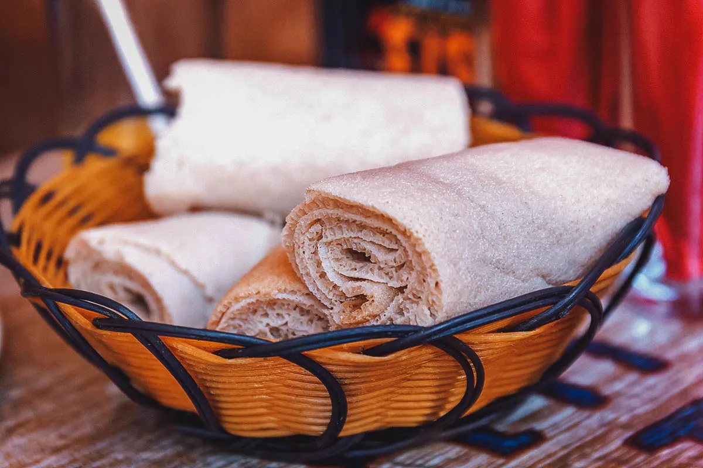

Injera: Ethiopia Food

Description
Make classic Ethiopian sourdough crepes at home, to serve with all your favorite Ethiopian dishes.
Ingredients
- 4 cups Teff flour
- 2 tablespoons baking soda
- 1 teaspoon salt
- 4 cups club soda
- 1 cup white vinegar
- Oil for pan
Steps
- In a large bowl, mix the flour, salt, and baking soda together. Whisk in the club soda until smooth. Then add the vinegar and whisk.
- Heat a large nonstick skillet over medium heat. Pour oil on a paper towel and wipe the skillet with the oiled paper towel. This creates a thin fatty layer to make it easier to flip the crepes.
- Using a scoop, pour batter into the skillet creating a 6-inch circle. Quickly and carefully swirl the pan around to thin out the batter until it measures 8- to 9-inches across.
- Cook for 1 minute, then using a large spatula, flip the Injera over and cook another minute. Remove from the skillet and stack on a plate. Repeat with remaining batter. The Injera will seem slightly crisp in the pan, but will soften immediately when placed on the plate. The stacking also helps steam and soften the Injera sourdough crepes.
- Once finished cooking the Injera. Cut the circles in half with a pizza cutter, roll into tubes and stack. Keep warm until ready to serve. Serve the Injera with Doro Wat or Mesir Wat, tearing pieces of Injera and using it to pick up the Doro Wat.